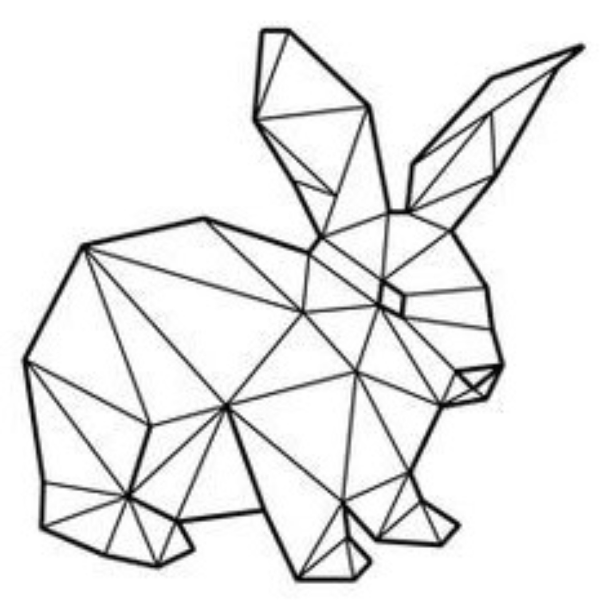
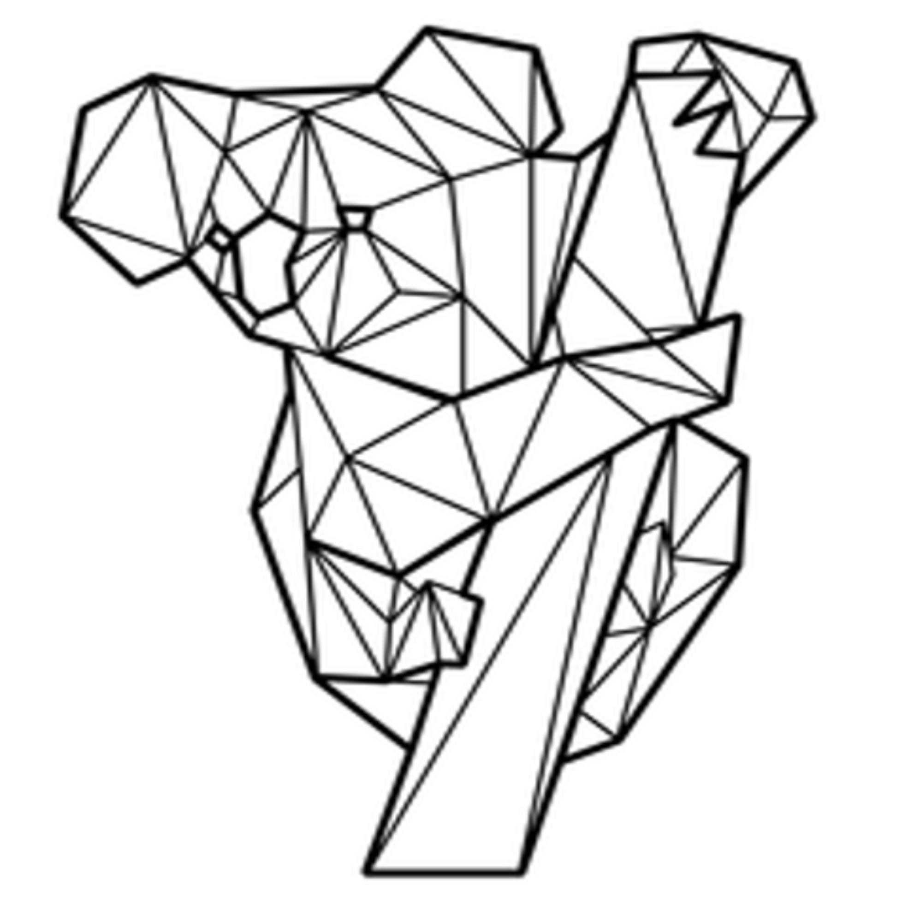
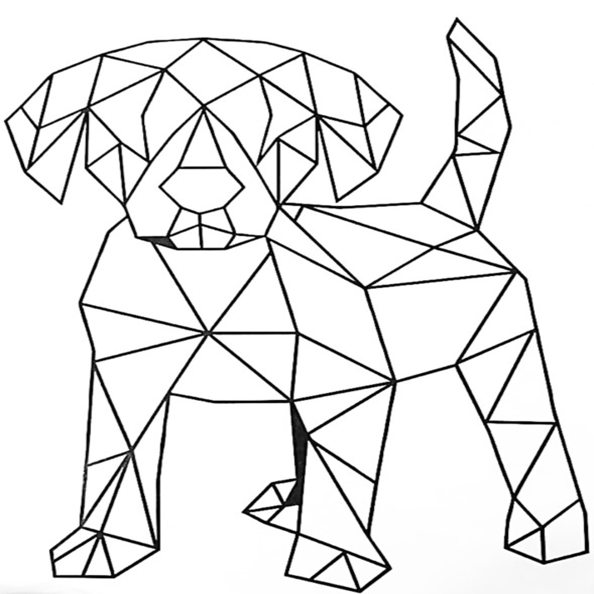
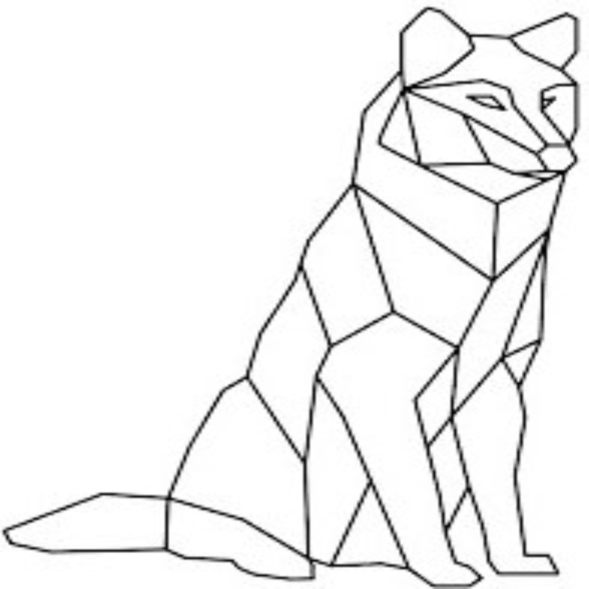
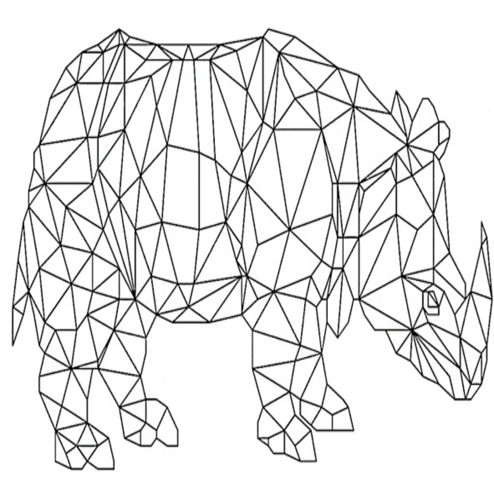
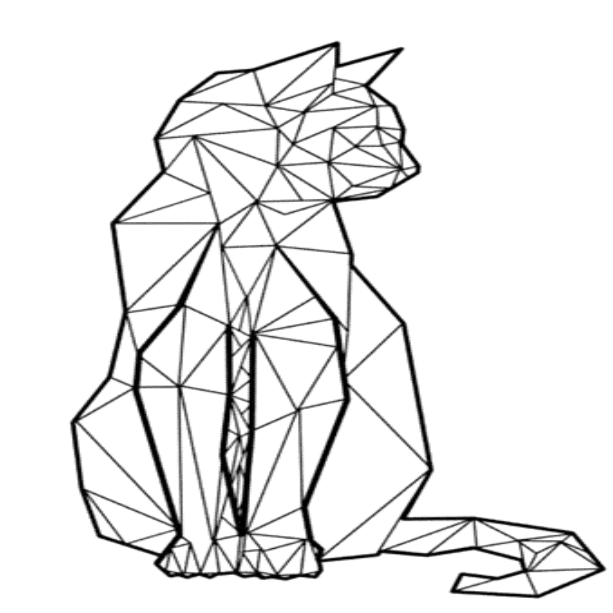
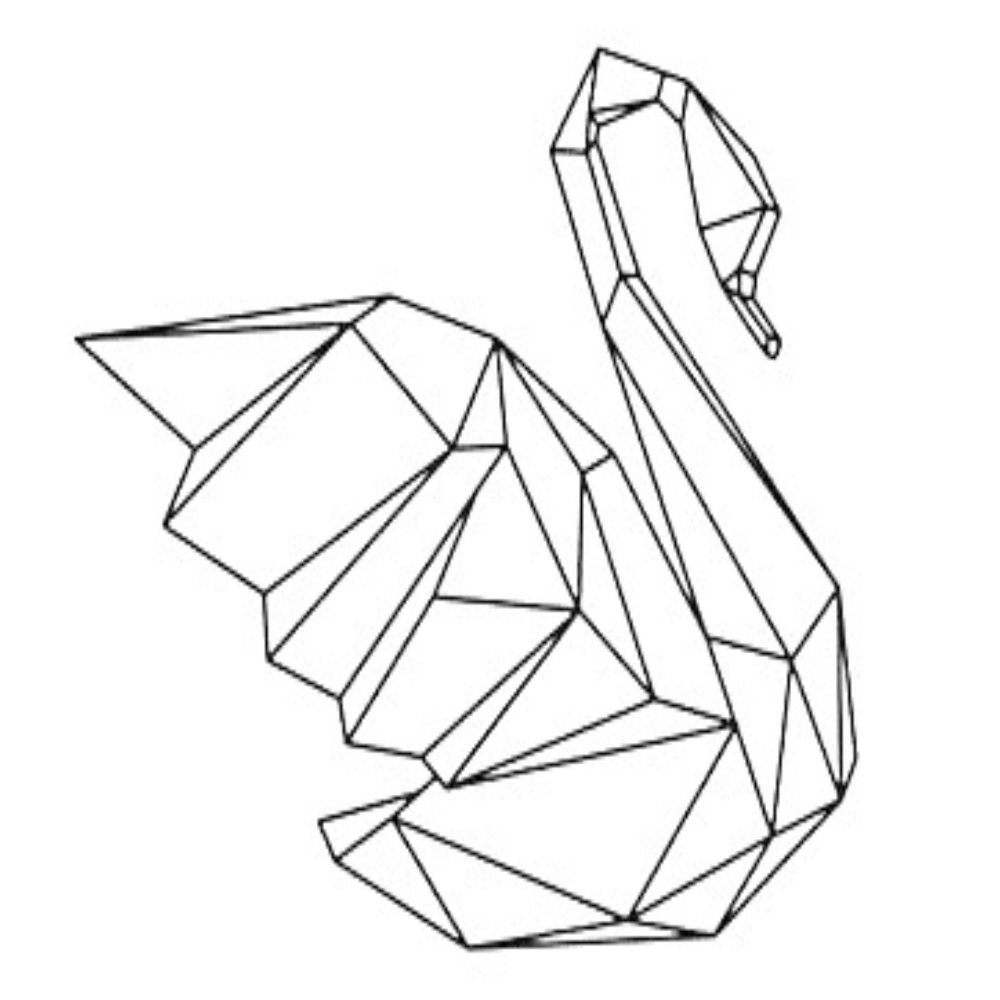
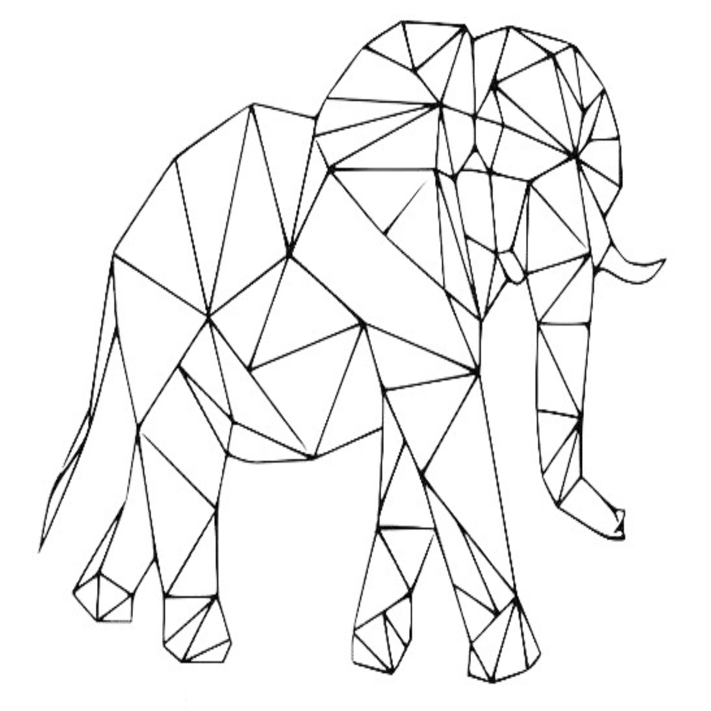
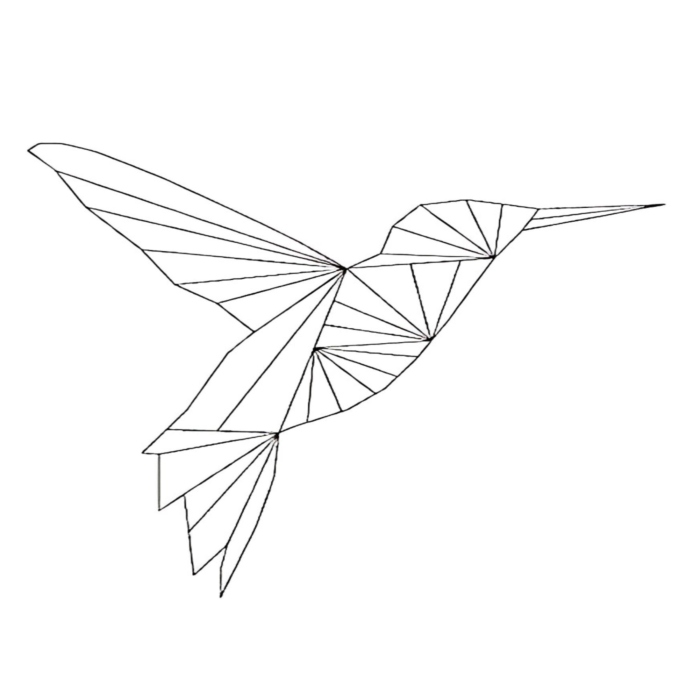

Prepárense para ver una renovación en la geometría animal.
¿Has oído hablar de la última tendencia en decoración? ¡Figuras geométricas de animales! Y este conejo es la última
incorporación a la colección. Con su cuerpo angular y sus patas rectangulares, es la forma más divertida de agregar un
toque de originalidad a cualquier habitación. Además, ¡no tienes que preocuparte por darle de comer o limpiar después de
él! Así que, ¿qué estás esperando? ¡Consigue tu figura geométrica de conejo hoy mismo y haz que tu hogar sea más
salvaje!

Prepárense para ver una renovación en la geometría animal.
Había una vez un grupo de figuras geométricas que decidieron convertirse en animales. Los triángulos se convirtieron en sus orejas puntiagudas, mientras
que los cuadrados formaron su cuerpo cuadrado y rechoncho. ¡Incluso el trapecio se convirtió en su nariz! Ahora, este
koala geométrico se balancea de rama en rama, ¡mientras todos los otros animales de la selva admiran su estilo único y
divertido!

Prepárense para ver una renovación en la geometría animal.
Había una vez un perro muy peculiar llamado Cuadrado. A diferencia de otros perros, su cuerpo estaba formado por figuras
geométricas. Tenía una cabeza triangular, orejas rectangulares y un cuerpo cuadrado. Sus patas eran trapezoidales y su
cola en forma de círculo. ¡Imagina lo gracioso que se veía caminando por el parque! Todos los demás perros se quedaban
sorprendidos al ver sus formas geométricas. Aunque era un perro especial, Cuadrado era muy cariñoso y juguetón, lo cual
lo convertía en el favorito de todos en el vecindario.

Prepárense para ver una renovación en la geometría animal.
¡Atención, atención! Se ha descubierto una nueva especie de lobo: el "lobógon". ¿Qué lo diferencia de los demás
lobos?
¡Pues que su cuerpo está hecho completamente de figuras geométricas! Este animal tiene un cuerpo triangular, patas
rectangulares y una cabeza redonda con orejas puntiagudas en forma de semicírculo. ¿No es increíble? Los científicos
todavía están intentando averiguar cómo logra el lobógon moverse con todo ese anguloso cuerpo, pero por ahora,
podemos admirar su belleza matemática.

Prepárense para ver una renovación en la geometría animal.
¡Prepárense para ver la figura geométrica más impresionante de todas! Sin más preámbulos, les presento al rinoceronte,
¡sí, han leído bien! Esta criatura majestuosa ha sido transformada en una figura geométrica única y fascinante. Con
líneas rectas y ángulos afilados, nuestro rinoceronte es más que solo un animal, es una obra maestra matemática. Si
pensábamos que los rinocerontes son intimidantes en la vida real, esperen a verlos en su forma geométrica.
¡Definitivamente un éxito en la siguiente fiesta de matemáticas!

Prepárense para ver una renovación en la geometría animal.
¡Al fin lo he logrado! ¡He conseguido transformar las figuras geométricas en un lindo gato! Con un rectángulos para su cuerpo y patas, y un triángulo como su cola.
Ahora el gato está tan bien hecho que parece estar a punto de salir de la hoja del contenedor.¡Ahora mi escritorio está lleno de gatitos geométricos!

Prepárense para ver una renovación en la geometría animal.
¿Alguna vez has visto un cisne hecho de figuras geométricas? Es tan divertido como raro. Imagínate un cisne hecho de
triángulos, círculos y rectángulos. Hasta podrían ponerle algunas alas hechas de trapecios y un pico hecho de
pentágonos. Aunque no sé si un cisne así podría volar o nadar como lo hacen los cisnes normales. Pero definitivamente
sería una figura geométrica muy extravagante y llamativa. ¡Imagínate todo un zoológico así, lleno de animales hechos de
figuras geométricas!

Prepárense para ver una renovación en la geometría animal.
Adivina quién está causando revuelo en el mundo de las figuras geométricas! ¡Es el elefante geométrico! Con sus patas
cuadradas y su cabeza triangular, este animal no pasa desapercibido entre las filas de triángulos, círculos y cuadrados.
¡Pero cuidado con su trompa hexagonal, siempre está lista para disparar formas por todas partes! Si buscas animales
divertidos y geométricos, el elefante es definitivamente la figura que necesitas. ¡Únete al desfile de formas y haz que
tus días sean más salvajes y creativos!

Prepárense para ver una renovación en la geometría animal.
¿Qué pasaría si las figuras geométricas fueran animales? ¡Sería una locura! Imagina un triángulo convertido en un pájaro
con sus alas afiladas, o un cuadrado transformado en un erizo con púas salientes. ¿Y qué tal un círculo que se convierte
en una serpiente, deslizándose sinuosamente por el suelo? ¡Nos encantaría ver cómo estas criaturas geométricas se
moverían en la vida real! Tal vez algún día la ciencia pueda hacer esto realidad, pero mientras tanto, ¡sigamos
imaginando!